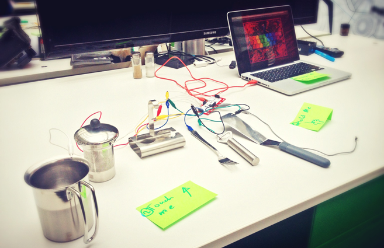
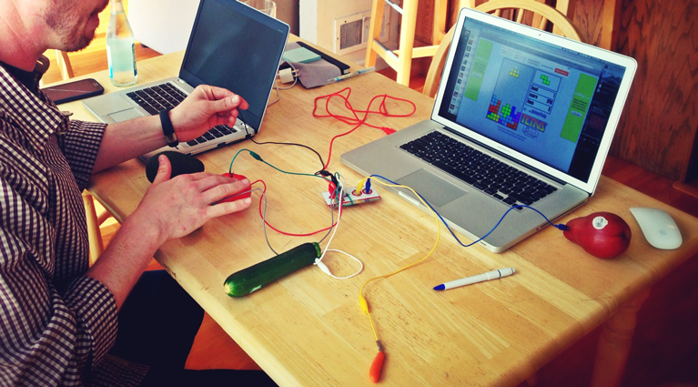
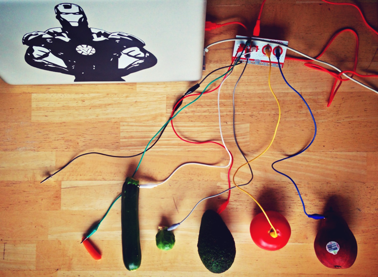

The internet of thing fascinates me. I started to play around with the likes of Arduino, MakeyMakey, Lego Mindstorm and see what I can make out of it.
One of my favourite past time is to play with everyday objects and make them do something completely different -- like turning fruits into video game controllers to play simple games like pac-man, tetris, canaball, etc.


Or made cooking utensils into a set of piano keys that can play simple musical tunes (see headline cover photo).
← Back to archive